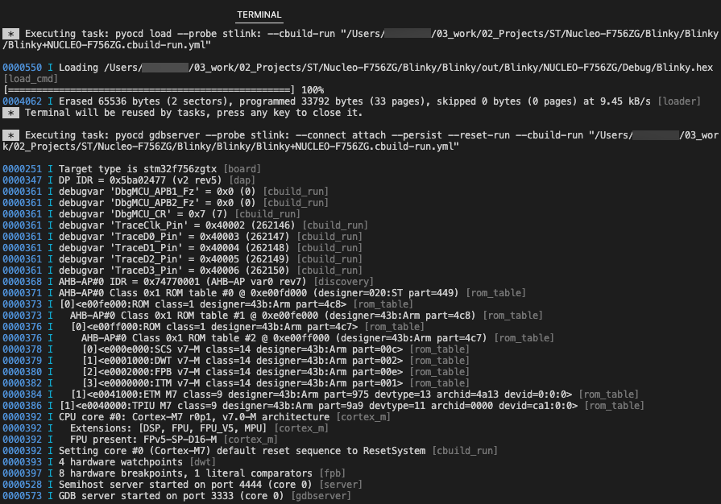

Run the application
Caution
First, check that your hardware is connected to your computer.
Before you can start debugging the application, you must download it to the flash of the target hardware.
Notes
- When you have several solutions in one folder, VS Code ignores the
tasks.jsonandlaunch.jsonfiles that you created for each solution. Instead, VS Code generates new JSON files at the root of the workspace in a.vscodefolder and ignores the other JSON files. As a workaround, open one solution first, then add other solutions to your workspace with the File > Add Folder to Workspace option. - If you are using a multicore device and you did not specify a
"processorName"in thelaunch.jsonfile, select the appropriate processor for your project in the Select a processor drop-down list at the top of the window.
In the Solution outline header, click  .
.
To verify that the project has run correctly, check the Terminal tab:

Troubleshooting
If the Arm Debugger engine cannot be found on your machine, a dialog box displays:
Select one of these options:
-
To add Arm Debugger to your environment, click Install Arm Debugger. The
vcpkg-configuration.jsonfile is updated. -
To indicate the path to the Arm Debugger engine from the settings, click Configure Path.